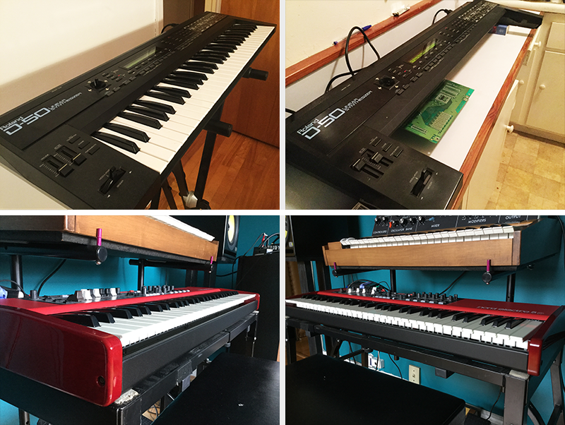
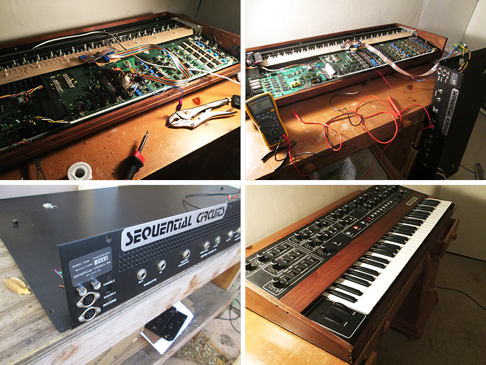
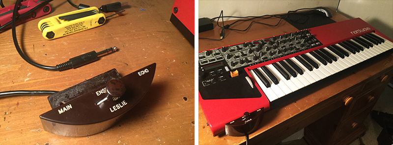

Home Products Mods Setups Extra Contact
We also perform mods and upgrades to existing synth, keyboard, and pedal setups such as keybed upgrades, extra button/switch/pedal controls, and MIDI input on vintage synths that were made in the pre-MIDI era. Some of our favorite upgrades and customizations are shown here, so please take a look and let us know if you've got an idea for that sick synth mod!
Roland D50 - Electro keybed transplant:
Here we removed the keybed from a classic Roland D50 synth, which is well known for having top-quality semi-weighted synth action, and re-wired and mounted it into a modern Nord Electro 5 keyboard. The result is a modern synth with the excellect action and feel of the D50!

Hammond XK2 - Crumar keybed transplant
In this mod we transplanted the keybed from a Hammond XK-2, also known for top-quality waterfall action, into a modern Crumar MOJO.
Prophet 5 MIDI input mod
In this mod re-wired the classic Sequential Circuits Prophet 5 synth to have a MIDI input for use with modern studio gear

Minimoog D modulation control pedal
Here we modified the classic Minimoog D to have foot-pedal control of the modulation wheel using a Yamaha FC7 pedal.
Roland A800-Pro Leslie switch control
In this upgrade we added a classic Leslie "Half-moon" style switch to a modern Roland A800-Pro Midi controller. The switch is assignable and can control any MIDI parameter (e.g., rotary control)
Nord Wave Leslie switch control
Similar to above, here we added a Leslie switch to a Nord Wave synth to control modulation depth
